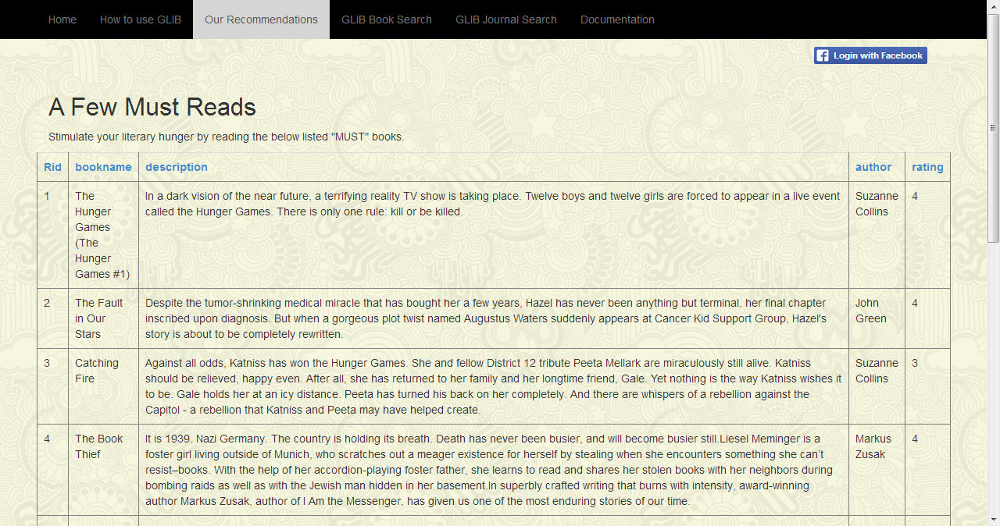
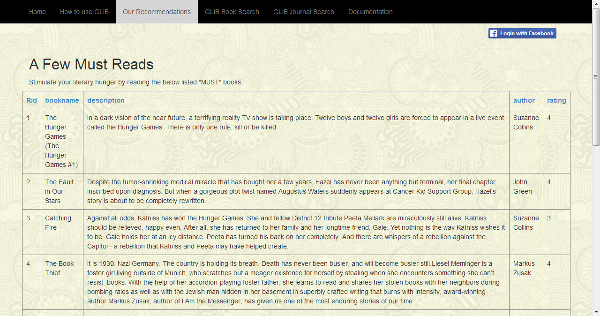

Recommendations Page
The Reccomendations page comprises of the top ten books that the Site owner recommends for the user.The data is displayed as fetched from the SQL Server Database.
The grid displayed is for the users to refer to when looking for any fresh reads.
One can also view the latest publications and the celebrity tweets from the literary world. This makes use of RSS feeds form various websites.Also the means to get in touch with the site owner are also listed on the page.

One can also view the latest publications and the celebrity tweets from the literary world. This makes use of RSS feeds form various websites.Also the means to get in touch with the site owner are also listed on the page.
